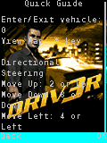
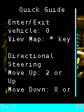
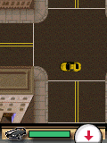

I sent back Driv3r with text doing something strange: it kept accumulating as it scrolled. The game had asked for a smaller panel, but our host had turned that request into the whole screen.DV01
The panel.
A display service expected to draw the original panel background and preserve its client rectangle. The old implementation treated it as a screen-size query, replacing 10,10 / 100×130 with 0,0 / 120×160. Text wrapping, heading placement and scroll clearing all inherited that wrong result.DV01

Before the panel repair: the original Quick Guide overruns the title-art background. Historical 120×160 host reproduction of the old runtime.
Open the image for the full original view.
DV90
After the panel repair: the original Quick Guide occupies its 100×130 black panel with correct client bounds. Historical 120×160 host frame.
Open the image for the full original view.
DV91The repaired service drew the observed flat background inside the requested bounds. Scrolling down and back up then restored the exact initial original-game pixels. The old runtime failed that comparison; the repaired one passed it.DV01
Mission statistics asked for another service.
The next phone stop reached the original Mission Complete statistics builder. Its wide-text formatter was unimplemented. Mission number, time, damage and totals all flowed through that service, with arguments beginning in a register and continuing on the guest stack.DV02
The implementation supplied the observed integer formats, field width, precision and literal percent sign with bounded sixteen-bit output. A focused invocation reproduced the old failure and checked the repaired statistics builder. That test did not pretend somebody had completed a mission just because it could call the statistics function.DV02
Real Steering.
Later, the phone report had no runtime stop and balanced input events. I still found driving hard to read and use. The original game offered Directional and Real steering schemes. We had a better place to start in its own options and vehicle state than in one generic pad.DV04DV11
A bounded one-time setup used the original menu keys to select Real Steering, then returned to the main menu. It did not write the preference directly. Walking, vehicle play and menus then received their own controls, while later changes in the original Options remained the player’s choice.DV04DV06

Original 120×160 world after native accelerator and left steering, from the historical Real Steering host probe. This does not measure physical thumb feel.
Open the image for the full original view.
DV92Driving exposed an independent accelerator and left/right steering rocker, with reverse separate. Burnout and skid kept the original numbered maneuvers. The retained native probe exercised gas and turn together; the next physical test still had the separate job of deciding whether that felt good under thumbs.DV06DV07DV08
We’d drawn from Genesis, Rush Marine, Contra, BioShock and Katamari, adapting their patterns to Driv3r’s older BREW contracts. Then this game made us understand its text panel, statistics formatter and steering. The shared work got us started; these were the parts Driv3r added.DV09DV10
About these records
The text bug and statistics stop come from separate phone reports. Before/after panel images are historical original-runtime host reproductions. The focused statistics-function regression does not establish mission completion. Steering selection uses original menu events; native driving checks establish their stated original physics/input route, not physical comfort. An Ashen startup reference in the source is unrelated to its movement patch. No original game was executed for this writing.
The receipts
Selected report lines, investigation notes and recorded feedback. Each receipt keeps its original source and scope.
DV01 / Scrolling text exposed the wrong panel serviceCheckpoint investigation notes
Source: 23-Driv3r_Bridge_v0.1.4_PRIVATE_CHECKPOINT.zip / Driv3r_Bridge_v0.1.4_PRIVATE/TECHNICAL_HANDOFF.txt · selected lines 28–35
V0.1.1 DEVICE-REPORTED TEXT FIX The user supplied 1000101923.mp4 (32.105 seconds, 1080x2340) and Driv3r-Bridge-v0.1.0-report-20261016-115934-890.txt. On-device evidence shows old glyphs accumulating during text scrolling, plus text consuming the full guest display instead of the original panel. The report identifies Samsung SM-S938U / Android 17 API 37; no runtime fault, unsupported calls, image decode failures or Android audio errors. Framebuffer remains 120x160. The controls and header are visibly within the system bars in this recording. The defect was in the host implementation of IDisplay vtable +0x30: it was incorrectly implemented as a screen rectangle query, rewriting the caller's 10,10 / 100x130 panel to 0,0 / 120x160 and skipping the requested background draw. Original caller 0x0010D050 copies its retained rectangle, invokes +0x30 with type=5 and background=0, then uses the resulting client bounds for heading/body/footer, wrap width and scrolling. The fixed observed flat filled panel draws the caller's background into the existing destination, respects the active bitmap clip, commits pixels and leaves the original client rectangle unchanged. No speculative frame styles are claimed; type 5 is the observed supported path. A regression executes the original Quick Guide using only native inputs: DOWN then UP must restore exact initial framebuffer pixels; scrolling to the end and back to the start must do the same. The v0.1.0 runtime fails the first restoration comparison. v0.1.1 passes all 47 text checks, including rapid scroll input without extra native timer pumping. Before/after original-game PNGs and expected baseline failure are retained in evidence/text_fix/. Existing 72 native execution, 12 controller, 35 key mapping and 9 input-ownership checks pass. The executable, BAR, MIF, key mappings, native save paths, app identity, signing key and report threading remain unchanged. The system font fallback is retained. Host tests establish the text repair; the updated APK has not been run on the user's phone here. The original video remains available as the user's supplied attachment; its identifying hash is recorded below rather than duplicating the recording inside this checkpoint.
DV90 / Historical image / Driv3r Quick Guide before the panel repairHistorical host capture
Source: Driv3r_Bridge_v0.1.4_PRIVATE/evidence/text_fix/before/01_initial.png
Original game pixels retained from the stated historical host check. No physical-phone capture is implied.
Unchanged historical image. Source member: Driv3r_Bridge_v0.1.4_PRIVATE/evidence/text_fix/before/01_initial.png SHA-256: 056ddcef054e3effa5fe695023af161a137b7d763a09d8ae907763a6588a1d4e Before the panel repair: the original Quick Guide overruns the title-art background. Historical 120×160 host reproduction of the old runtime. Scope: Historical host original-runtime framebuffer; not physical-phone output or a framework UI fixture. Visually inspected game-only, zero EXIF, unchanged bytes.
DV91 / Historical image / Driv3r Quick Guide after the panel repairHistorical host capture
Source: Driv3r_Bridge_v0.1.4_PRIVATE/evidence/text_fix/after/01_initial.png
Original game pixels retained from the stated historical host check. No physical-phone capture is implied.
Unchanged historical image. Source member: Driv3r_Bridge_v0.1.4_PRIVATE/evidence/text_fix/after/01_initial.png SHA-256: 5e8ee4bfc51b1a1b1cac436cd88e7855ed8e01910af53a4a72f84d87687381db After the panel repair: the original Quick Guide occupies its 100×130 black panel with correct client bounds. Historical 120×160 host frame. Scope: Historical host original-runtime framebuffer; not physical-phone output or a framework UI fixture. Visually inspected game-only, zero EXIF, unchanged bytes.
DV02 / The original statistics builder needed wide text formattingCheckpoint investigation notes
Source: 23-Driv3r_Bridge_v0.1.4_PRIVATE_CHECKPOINT.zip / Driv3r_Bridge_v0.1.4_PRIVATE/TECHNICAL_HANDOFF.txt · selected lines 38–45
V0.1.2 DEVICE-REPORTED MISSION-STATISTICS STOP Input: Driv3r-Bridge-v0.1.1-fault-20261016-124604-935.txt, Samsung SM-S938U / Android 17 API 37. The independent automatic report captured the native timer stop at SYS_B+0x3C, return address 0x0010418D, after 1,115 callbacks / 34,333,211 original ARM steps. Host/save errors are absent; image decode failures and unknown interfaces are zero. The original module, BAR and MIF hashes match preservation inputs. The original ARM function at 0x001040F1 constructs Mission Complete statistics. At the reported call, r0 is the game's temporary wide output buffer, r1=200 is byte capacity, r2 points to the original widened BAR resource 303 (Mission #: %i), and r3 is the original mission number. Subsequent calls use resources 304/305/307-310/312-313 for time, damage, scores and totals. SYS+0x3C was unimplemented. It is now a bounded 16-bit text formatter for the observed signed decimal formats, integer field width/precision and literal %%. Arguments start in ARM r3 and continue on the guest stack. Time fields such as %2.2i:%2.2i produce 01:09; damage retains one percent sign. The service writes complete 16-bit characters within byte capacity and terminates when capacity permits. Unobserved format conversions remain explicit failures. This extends the host ABI; it does not change native mission rules, scores, progress or executable bytes. The v0.1.1 runtime reproduces the exact missing service and return address when the preserved statistics builder is invoked after normal native first-mission initialization. The repaired builder executes all original statistics sections and renders the original panel. MissionStatsRegression passes 51 checks including that exact original builder, register/stack arguments, integer extremes, precision, percent literals and sentinel-checked full, truncated, odd, zero and one-byte capacities. Its direct ARM function invocation is a focused regression, not evidence that a mission was completed through gameplay; its displayed zero mission and score are the actual initialized game fields. No mission-completion flags or saves are manufactured. Retained evidence lives in evidence/mission_stats_fix/. Existing 72 original-execution, 47 text-scroll, 12 controller, 35 key-mapping and 9 input-ownership checks pass. The earlier text bounds/clearing fix, original controls, Genesis presentation, timer policy, independent report writer, save handling, package and signing key are retained. v0.1.2 has not been physically tested here; complete mission-to-next-mission progression and full campaign completion remain unverified. This private checkpoint retains the input fault report and both the expected baseline failure and repaired renderer evidence.
DV04 / Real Steering selected through original optionsCheckpoint investigation notes
Source: 23-Driv3r_Bridge_v0.1.4_PRIVATE_CHECKPOINT.zip / Driv3r_Bridge_v0.1.4_PRIVATE/TECHNICAL_HANDOFF.txt · selected lines 68–80
V0.1.4 — APPROVED REAL STEERING / ICON UPDATE (2026-10-25 America/Chicago) Inputs: user-approved control discussion, 1000103777.mp4 (30.174s, 1080x2340), Driv3r-Bridge-v0.1.3-report-20261025-192527-866.txt, supplied Gameplay UI Kit v1.1.2 and Omni finished handoff kit v1.0. The v0.1.3 report has no runtime stop and balanced 118 press/release inputs, but the default Directional preference and confusing control presentation made driving difficult. Original source, package, saves and signer were recovered from the v0.1.3 private checkpoint. Native evidence and read-only observation Original applet+0x25 is global mode. At mode 18, phase applet+0x94A is 4 for active play, 6 map, 8 story/tutorial and 19 pause. Do not infer an actor from phase alone. The physics object begins at applet+0x1200: type byte +1 is 5 on foot and 0..4 for vehicles. Original input function 0x0010A9D8 branches on type 5 for walking. Global preference byte applet+0x8DB is 1 Directional, 0 Real; actual vehicle flag applet+0x1257 selects handler 0x001010E0 when nonzero and 0x001011B4 when zero. Native menu index is applet+0x768, exposed by original getter 0x0010CF48. Result snapshots expose these five fields read-only and copy them with other presentation metadata. No guest-memory writes or interpreter/service changes were added for controls. Original Quick Guide resource 171 identifies Real Forward UP/2, Reverse DOWN/8, Left LEFT/4, Right RIGHT/6; Directional reverse is SELECT/5. Native 1/3 are burnout turns, 7/9 emergency-brake turns. Original Out of Car help describes four-way movement and 0 to enter/exit, without a gun action. This evidence determines the four contexts rather than imposing a universal layout. One-time preference setup Driv3rSteeringSetup is a bounded state machine using only original key press/release events: Main menu index 3 (Options), Options index 2 (Control), Control index 1 (Real), CLR to main. BridgeController schedules those edges at 80ms intervals on its existing worker; no synthetic timers or direct prefs.dat edits. Manual input is disabled during the visibly labelled setup, and setup suspends while the Activity is backgrounded. Original prefs.dat changes only byte 11 from 1 to 0. Already-Real saves need no menu events. After success, private host preference bridge-controls/real-steering-v014 records completion; subsequent native Options changes are respected. Restart/exit cancel the setup callback. Native save persistence still owns the game preferences. Controls Driv3rControls chooses menu/walk/real/directional using the native phase, actor and actual vehicle steering flag. On context changes MainActivity clears touch owners and custom pointers, retaining registered hardware holds. Real Steering has a two-cell digital Driv3rSteeringPad: one stable pointer can slide LEFT to RIGHT, leave/reenter or cancel. Its BridgeInput source is independent of accelerator/reverse buttons; either release order leaves the other owner's input held. It is digital native-key steering, not analog conversion. Secondary burnout and skid keys are retained with accurate labels. Walking and menus use the original square four-way pad; menus have a separate CONFIRM. Directional fallback labels match the original scheme. Both panels retain the same renderer and stable control slot.
DV11 / The preceding phone run had no runtime failureHistorical physical-phone runtime report
Source: 23-Driv3r_Bridge_v0.1.4_PRIVATE_CHECKPOINT.zip / Driv3r_Bridge_v0.1.4_PRIVATE/evidence/device_v013/Driv3r-Bridge-v0.1.3-report-20261025-192527-866.txt · selected lines 7–15, 27–29
Host failure: none Save error: none Module loaded: true; applet created: true; start accepted: true Original ARM steps: 59191004; timer callbacks: 1719; key events: 236 Display updates: 774; blits: 64691; framebuffer: 120x160 Images: 71; images decoded: 11; decode failures: 0; unknown interfaces: 0 CPU error: null; live error: null Original audio play/stop requests: 1/1 Android audio starts/stops/errors: 1/1/0; Stopped; muted=false [... selected excerpt ...] Accepted input operations (count; queue wait wall ms mean/max; processing wall ms mean/max): press: 118; 0.525/11; 0.059/1 release: 118; 1.915/97; 0.085/1
DV06 / The actual walking and driving layoutCheckpoint investigation notes
Source: 23-Driv3r_Bridge_v0.1.4_PRIVATE_CHECKPOINT.zip / Driv3r_Bridge_v0.1.4_PRIVATE/README_FIRST.txt · selected lines 6–18
DRIVING The first main menu briefly opens original Options to select Real Steering, then returns to the main menu. This happens once for this update. A visible setup label and completion message explain it. Later changes you make in original Options are respected. Hold ACCELERATE with your right thumb and steer with the left-thumb LEFT/RIGHT rocker. Slide across the rocker without lifting to change direction. REVERSE is a separate native reverse input. BURNOUT LEFT/RIGHT and SKID LEFT/RIGHT retain original 1/3 and 7/9 turns; these are secondary maneuvers, not ordinary brake pedals. PAUSE, MAP and EXIT CAR remain below them. ON FOOT AND MENUS The layout follows the original native actor and game state. On foot: four-way movement, ENTER CAR, MAP and PAUSE. Menus/story/pause screens: four-way navigation, CONFIRM and BACK. If you select Directional in original Options, the driving layout becomes a direction pad with the original SELECT/5 REVERSE action. ORIGINAL KEYPAD The visible ORIGINAL KEYPAD button switches inline. D-PAD RETURN switches back in one tap. The full original separate D-pad/OK, digits, L/R softkeys and CLR remain available. Both modes use the same live native-aspect viewport. Switching clears held touch inputs while preserving registered physical-controller holds. Android system Back exits; native BACK/PAUSE/CLR stays separately available. APP ICON AND UI New gritty DRIV3R artwork is used for the Android launcher and game header. The actual supplied Gameplay UI Kit v1.1.2 is embedded, including its independent-contact repair. Portrait/landscape and safe-area behavior remain responsive. Original ARM code, game art, text, audio, saves and the earlier text/statistics compatibility fixes are preserved.
DV92 / Historical image / Driv3r after original gas and left steering inputHistorical host capture
Source: Driv3r_Bridge_v0.1.4_PRIVATE/evidence/driving_controls/04_gas_and_left.png
Original game pixels retained from the stated historical host check. No physical-phone capture is implied.
Unchanged historical image. Source member: Driv3r_Bridge_v0.1.4_PRIVATE/evidence/driving_controls/04_gas_and_left.png SHA-256: ff94e3db475ed7756ea0610cad83747137f005d58ca427b1f879dc4037e94dee Original 120×160 world after native accelerator and left steering, from the historical Real Steering host probe. This does not measure physical thumb feel. Scope: Historical host original-runtime framebuffer; not physical-phone output or a framework UI fixture. Visually inspected game-only, zero EXIF, unchanged bytes.
DV07 / Real ARM driving and setup scopeHistorical host verification output
Source: 23-Driv3r_Bridge_v0.1.4_PRIVATE_CHECKPOINT.zip / Driv3r_Bridge_v0.1.4_PRIVATE/evidence/driving_controls/RESULT.txt · selected lines 1
PASS 96 native driving/setup checks. Real original ARM and resources; native menu preference selection and real vehicle physics. Virtual host clock; no phone comfort or complete campaign claim.
DV08 / Current native and framework checks remain separateHistorical host verification output
Source: 23-Driv3r_Bridge_v0.1.4_PRIVATE_CHECKPOINT.zip / Driv3r_Bridge_v0.1.4_PRIVATE/evidence/FINAL_VERIFICATION.txt · selected lines 5–16
PASS one-time native Options Real Steering setup; only original prefs.dat byte 11 changes; later user preference respected PASS 96 original ARM driving/setup checks, including speed/heading/pixels, simultaneous gas/steering, both release orders, reverse, pause/resume PASS existing 72 ARM execution, 47 native text-scroll and 51 native statistics/formatter checks PASS 18 controller and 36 exact hardware-mapping checks PASS four production contexts / 1120 geometry cases / 39760 assertions PASS shared kit 35022 input, 107 independent contacts, 420 geometry cases / 59221 assertions, 13 configuration checks and 12 Android tests PASS actual Driv3r Activity/resources: 8 Android API34 native-graphics tests, including real root multitouch, rocker sliding, mode/context ownership, icon rendering, insets/fonts and cleanup PASS new launcher artwork decoded pixels preserved; single resource used for launcher and header PASS 43 signed package, actual-kit, original-source and local handoff inventory checks LIMIT framework Activity uses recording worker boundary; native execution is tested separately LIMIT local handoff stripping/reconstruction inventory is not Omni production export acceptance LIMIT no v0.1.4 physical phone, actual Downloads/audio, full campaign or Omni hosted/cumulative export acceptance
DV09 / Older applet and typed-resource semanticsCheckpoint investigation notes
Source: 23-Driv3r_Bridge_v0.1.4_PRIVATE_CHECKPOINT.zip / Driv3r_Bridge_v0.1.4_PRIVATE/TECHNICAL_HANDOFF.txt · selected lines 6–18
Original input is upload Driv3r.rar, now retained at original_inputs/Driv3r.rar. Its BREW module is 73,776 bytes; resource BAR is 180,029 bytes; launcher MIF is 3,554 bytes. MIF and original string resource 3 agree on class ID 0x0101F0A9. Original metadata names LG VX4400; selected handset canvas is 120x160. No game logic was recreated or patched. The actual supplied ARM instructions execute from address 0x00100000. This older AEEApplet layout stores its event handler at applet+0x1C; +0x18 is a display object. The original main handler at 0x00101CA9 uses EVT_KEY (0x100) in menus and EVT_KEY_PRESS / RELEASE in gameplay mode 0x12, read from applet+0x25. The input routine at 0x0010D490 retains pressed, held and released edges at applet+0x970/+0x974/+0x978. Short press/release pairs do not need extra guest timer pumping. BAR lookup must include both ID and type: type 1 strings and type 6 binary/image/audio groups reuse IDs. Strings are raw Latin-1 with their full recorded length, widened by the shell service. Images include resource headers and BMP or image/z zlib-compressed BMP. The platform decodes those images while the original module's own bitmap paths continue executing. Native source-copy (2) and transparent (7) raster modes are supported on the observed path. Host text uses an embedded 6x10 system-font fallback with original requested strings, colors, clipping and alignment; handset font metrics are approximated. Added title-exercised services include byte-order conversion (system +0x12C/+0x130), bounded wide-string copy (+0x80), old applet offset, typed resources, BMP IImage decoding, display text/color/alignment and the original filled text-frame service. Startup constructs older network-related helper objects. The observed startup URL helper request to http://rs.sorrent.com:80/rs/fe returns an explicit failure in this offline build; the original game handles that failure and reaches gameplay. No remote success, server response, entitlement or authentication state is fabricated. This is not a complete BREW implementation. MIDI is delivered from the original SoundPlayer memory buffers, not recreated. Android MediaPlayer receives original bytes. Native audio started/completed notifications execute the guest callback. Audible Android output remains untested. Guest events, audio notifications, native timers and saves share one game worker. Only due native SetTimer callbacks run; input, reports and audio callbacks never pump the timer. Routine tracing is off, and unchanged display revisions do not create new presentation pixel arrays. Sparse performance and battery-temperature measurements are retained in reports. Direct report saving uses an immutable report cache refreshed at most once per second during ordinary play, plus a separate HandlerThread and MediaStore Downloads writer. A blocked-guest-lock regression proves capture and report writer dispatch do not depend on the guest worker. This fixture does not test physical MediaStore. Reports include snapshot age so a stalled worker's retained context is identifiable. Faults request an independent automatic report, also retained privately.
DV10 / Several earlier bridges supply compatibility patternsCheckpoint provenance notes
Source: 23-Driv3r_Bridge_v0.1.4_PRIVATE_CHECKPOINT.zip / Driv3r_Bridge_v0.1.4_PRIVATE/THIRD-PARTY-NOTICES.txt · selected lines 3–5
Compatibility implementation reuses the BREW runtime, Android input ownership, deadline scheduling and presentation patterns supplied with the Resident Evil Genesis, Rush Marine, Contra and later BioShock / Katamari bridges. This build adds title-specific older BREW ABI support without translating or replacing the original game logic. Host system-font fallback pixels derive from DejaVu Sans Mono. Their license is retained in app/assets/DejaVu-NOTICE.txt. The fallback is a host BREW display service; it is not the original handset font. Original game bitmaps, cars, maps, characters and music are preserved.